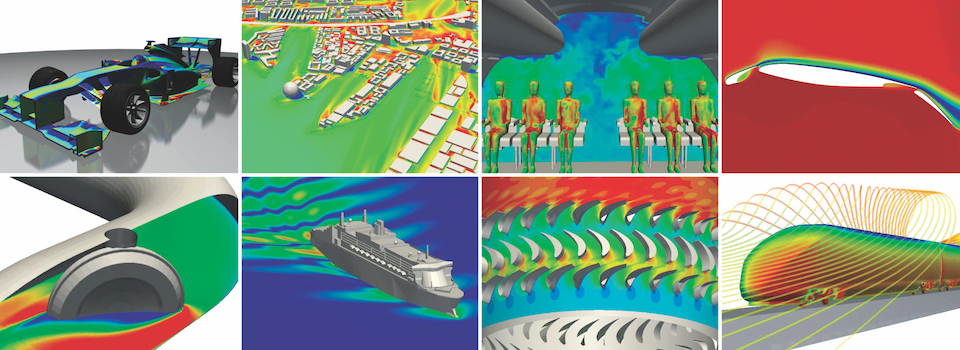
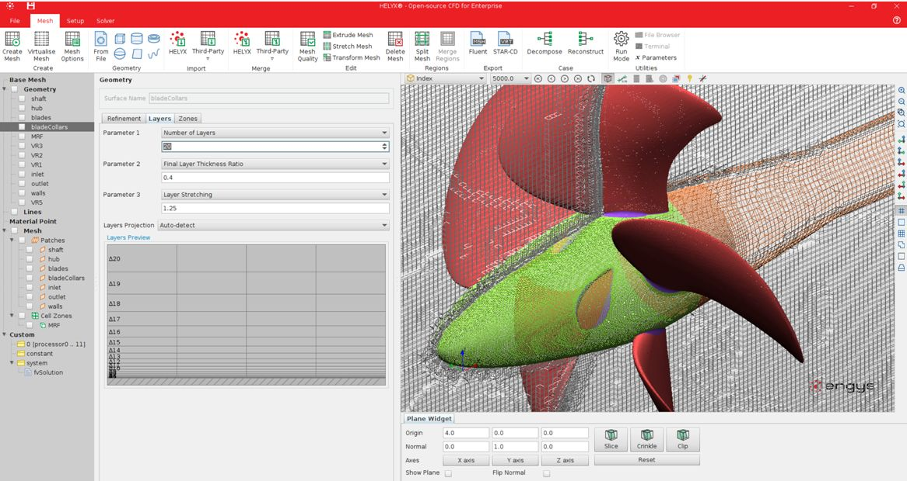

A unique collaboration between academia and industry has created a novel simulation-as-a-service model offering cost effective, pay-per-use access to advanced CFD modelling on HPC cloud.
Independent CFD consultancy ENGYS has developed a general-purpose CFD software solution for engineering analysis and design optimisation. Called HELYX, it is based on an advanced open source simulation engine that uses OpenFOAM technology. A collaboration with EPCC at the University of Edinburgh has created a simulation-as-a-service business model offering cost effective, pay-per-use access to advanced CFD modelling based on an implementation of HELYX on EPCC’s Cirrus HPC cloud. A purpose-built, easy-to-use interface provide users with seamless migration from local desktop to operation on the Cirrus HPC cloud, providing significant advantages of scale.

HELYX by ENGYS combines the proven capabilities, support and reliability of commercial software with the inherent advantages of cost-effective, scalable open-source solutions.
The scalability of OpenFOAM presents opportunities to benefit from using HELYX on HPC platforms but this requires access to expensive hardware. As investment in HPC facilities is beyond the means of many ENGYS customers, the company partnered with EPCC to create a cloud-based software-as-a-service proposition that gives its customers access to advanced CFD modelling on an HPC cloud.
EPCC has installed HELYX on the Cirrus HPC cluster and collaborated with ENGYS to build a client-server type access model that offers easy access to the CFD capability. EPCC provides the required HPC hardware, storage and networking and manages all O/S, middleware and HELYX application software. Alleviated from the problem of provisioning HPC services, HELYX users can focus on the problem at hand – advanced engineering analysis and design.
Users can seamlessly ‘cloud-burst’ from a local workstation to the HPC service on demand. The HPC software-as-a-service model offers users pay-per-use-access to the combined software and hardware service, giving them the advantages of scale without costly investment in HPC hardware. Unlike many of its competitors, ENGYS facilitates access to HELYX ‘at-scale’ without the burden of overly expensive licensing terms.
The end result for HELYX users is easy cost-effective access to HELYX on HPC cloud, resulting in quicker engineering analysis, faster time to market and improved product design.

Acknowledgement
This work used the Cirrus UK National Tier-2 HPC Service at EPCC funded by the University of Edinburgh and EPSRC (EP/P020267/1). (http://www.cirrus.ac.uk)
Contact Us
If you are interested in creating a case study highlighting your work on Cirrus then please do not hesitate to contact the support team.